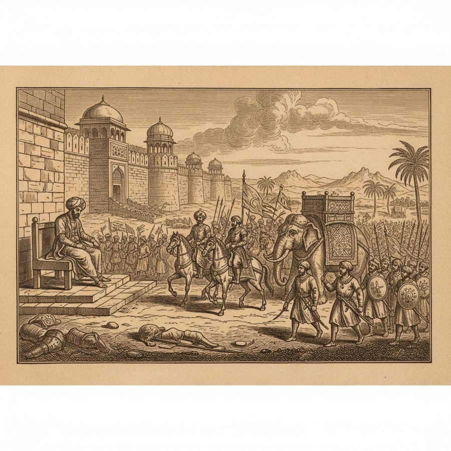
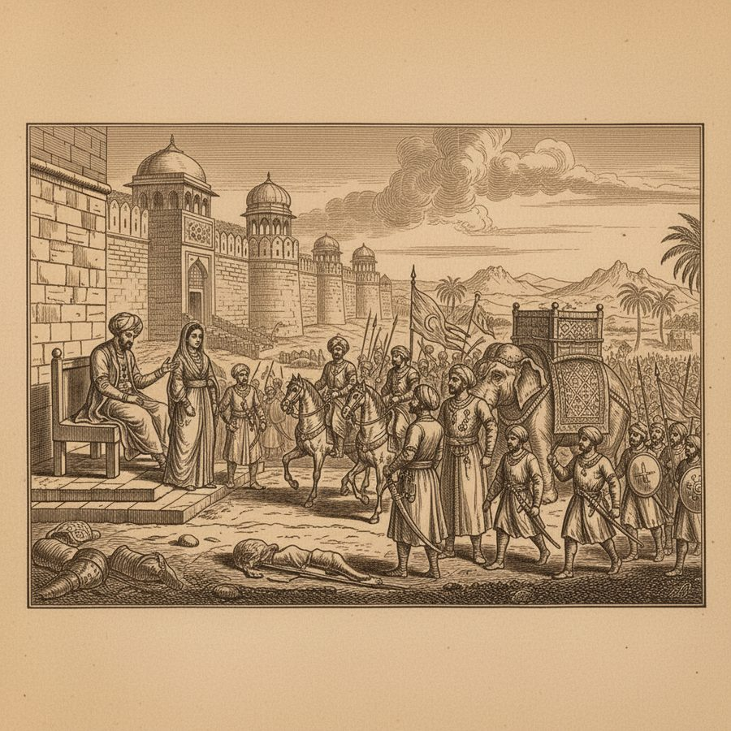

The Empress Rizia — “No Fault But That She Was a Woman”
The only woman ever to rule the Delhi Sultanate in her own right — a three-year reign that ended, Ferishta says, 'deserving a better fate.'
Delhi, 1236. When Sultan Iltutmish looked at his sons — given up, in his words, to 'wine, women, gaming, and the worship of the wind' — he trained his eldest daughter Rizia in government instead, and left her as regent when he campaigned. After his death and a brother's six-month collapse, the nobles raised Rizia to the throne. She assumed the imperial robes, gave public audience daily, restored her father's laws and, the chronicler says, distributed justice 'with an equal hand'. When a coalition of provincial governors marched on Delhi, she beat them without a battle — sowing dissension among them until the alliance dissolved, then hunting down the ringleaders. Her undoing was favoritism: she raised Eacoot, an Abyssinian former slave, to Captain General over the Turkish nobles' fury. The governor of Tiberhind rebelled; on the march her own Turkish Omrahs mutinied, killed her general and seized her. In captivity her jailer Altunia married her, and together they raised an army of Gickers and Jits and twice marched on Delhi to win back her empire. Defeated both times by Balin, she and her husband were overtaken in flight and 'inhumanly put to immediate death'. Ferishta's verdict: 'Thus died the Empress Rizia, deserving a better fate.'
Figures: Sultana Rizia, Shumse ul dien Altumsh (her father), Malleck Altunia, Eacoot the Abyssinian, Byram Shaw, Balin
The story as a comic


Why it stands out
She was the first and only woman to rule the Delhi Sultanate in her own right — and the book's famous line about her ('the strictest scrutineers of her actions could find in her no fault but that she was a woman') is one of the great backhanded verdicts in historical writing. Her story has everything: a father's gamble, a bluff called without battle, a fatal favorite, a marriage in a prison cell, and two last desperate campaigns.